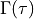
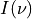
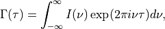
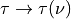
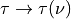

Coherence¶
-
pycis.model.coherence.calculate_coherence(spectrum, delay, material=None, freq_com=None)[source]¶ Calculates the (temporal) coherence of a given intensity spectrum for a given interferometer delay(s).
Temporal coherence  is the Fourier transform of the frequency spectrum :

with interferometer delay time
 and frequency
and frequency  as the conjugate variables.
Generally, dispersion means that  but a first-order (linear) approx. for dispersion maintains it in a modified form (the ‘group delay’ approximation).
as the conjugate variables.
Generally, dispersion means that  but a first-order (linear) approx. for dispersion maintains it in a modified form (the ‘group delay’ approximation).- Parameters
spectrum (xr.DataArray) – Intensity spectrum. Dim. ‘wavelength’ has coords with units m or else dim. ‘frequency’ has coords with units Hz. Spectrum units are then either ( arb. / m ) or (arb. / Hz ) respectively.
delay (xr.DataArray) – Interferometer delay in units radians. If delay is a float or is a DataArray without a ‘wavelength’ or a ‘frequency’ dimension, then the group delay approx. is used. In this case, it is assumed that the delay value(s) correspond to the centre-of-mass (COM) frequency of the given spectrum and the coherence is calculated for each delay value. If delay has either a ‘wavelength’ dim. or a ‘frequency’ dim. – with coordinates that match the corresponding dim. of spectrum – then the full dispersive integral is evaluated.
material – string specifying the interferometer crystal material. See pycis.model.dispersion for valid inputs. This is not needed in the full dispersive treatment as the dispersion info has already been provided in the delay argument. To do a none-dispersive calculation, you should leave material=None and use a delay argument that will trigger the group delay approx.
freq_com – centre of mass frequency of spectrum, if it has already been calculated.
- Returns
coherence (temporal). Units are those of the spectrum argument, but integrated over the spectral dimension e.g. if spectrum has units ( W / m^2 / m ) then coherence has units ( W / m^2 ).